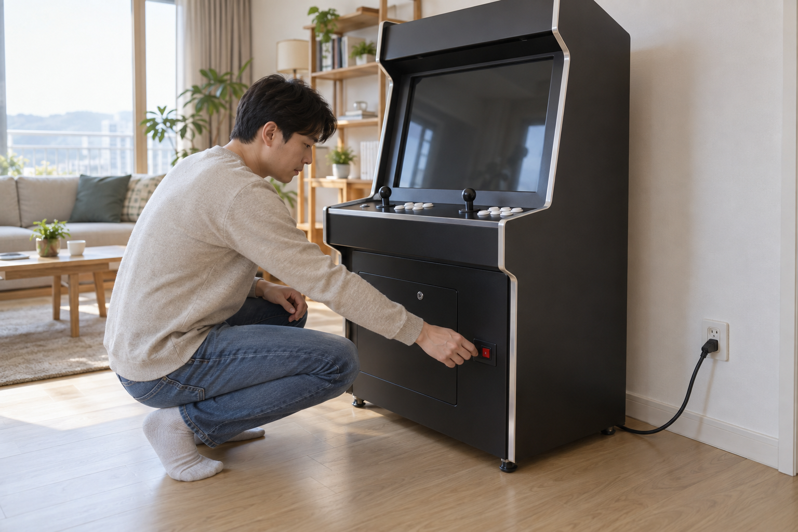
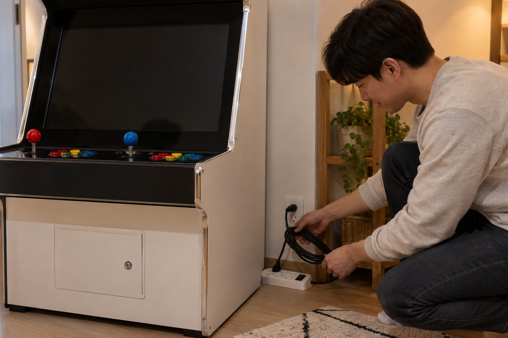

오락기는 케이블과 주변 상태를 먼저 확인하고, 제품 안내에 적힌 순서대로 전원을 켜고 끄는 것이 기본입니다. 게임을 마친 뒤 화면과 소리가 멈춘 것을 확인하고 전원을 끄며, 스위치 위치나 종료 방식이 불분명하면 임의로 반복 조작하지 마세요.

켜기 전에 케이블과 주변을 확인하세요
전원 케이블이 가구나 기기 아래에 눌리지 않았는지, 피복이 눈에 띄게 손상되지 않았는지 살펴보세요. 통풍구 주변을 막는 물건이 없는지 확인하고 젖은 손으로 플러그나 스위치를 만지지 마세요. 노리박스 제품 목록에는 오락기용 220V 전원케이블과 전용 오락기열쇠가 각각 별도 상품으로 안내되므로, 액세서리가 모든 제품에 공통이라고 생각하지 말고 구매한 모델의 구성을 확인해야 합니다.
전원을 켜기 전에는 케이블 상태와 기기 주변의 통풍 공간을 눈으로 함께 확인하세요.
- 전원 케이블이 눌리거나 꺾인 곳은 없는지 확인하기
- 통풍구와 기기 주변에 물건이 밀착되지 않았는지 보기
- 손과 바닥이 젖어 있지 않은지 확인하기
- 현재 제품의 스위치 위치와 전원 구성을 안내서에서 찾기
제품 안내 순서대로 한 번만 켜세요
제품마다 본체, 화면, 연결 장치의 전원 순서가 다를 수 있으므로 판매 페이지나 안내서의 순서를 우선하세요. 스위치를 켠 뒤 화면이 바로 나오지 않더라도 연속해서 껐다 켜지 말고 제품 안내에 적힌 대기와 확인 절차를 따르세요. TV 연결형이라면 TV 연결형 오락기 설치 방법에서 전원과 화면 입력을 나눠 확인할 수 있습니다.
전원 스위치는 안내된 위치를 확인한 뒤 한 번만 조작하고 기기의 반응을 기다리세요.

종료 순서를 마친 뒤 전원을 끄세요
게임을 먼저 끝내고 제품에 종료 메뉴나 안내 절차가 있다면 그 순서를 따르세요. 화면과 소리가 멈췄는지 확인한 다음 지정된 전원 스위치를 끄고, 플러그나 멀티탭을 먼저 끄는 방식이 맞는지는 제품 안내에서 확인하세요. 전원을 끈 직후 다시 켜야 한다면 제품별 안내를 확인하거나 판매자에게 문의하는 편이 좋습니다.
게임을 끝낸 뒤 화면과 소리가 멈췄는지 확인하고 안내 순서대로 전원을 끄세요.
이상이 느껴지면 사용을 멈추고 문의하세요
평소와 다른 냄새나 소리, 눈에 띄는 케이블 손상 또는 비정상적으로 뜨거운 부분이 느껴지면 전원을 반복해서 시험하지 마세요. 제품명, 증상이 나타난 시점, 화면 상태와 전원 연결 방식을 정리한 뒤 판매자에게 문의하세요. 노리박스는 판매 뒤 생기는 사용 문의와 A/S, 부품 문제를 직접 다뤄온 경험을 제품 점검에 반영한다고 소개하며, 문의 전 준비할 내용은 오락기 구매 후 확인할 사항에서도 볼 수 있습니다.
이상 징후가 있으면 반복 작동보다 상태를 기록하고 제품 판매자에게 먼저 문의하세요.
현재 노리박스 오락실게임기와 전원 관련 제품은 제품자세히보기에서 확인하세요.